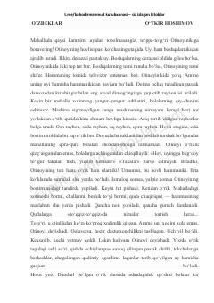

OOʻzbek xalqining hayoti, urf-odatlari va insoniy qadriyatlar haqidagi taʼsirli asar.
Asarda oʻzbek xalqining turmush tarzi, urf-odatlari va insoniy munosabatlar tasvirlangan. Hikoya markazida keksa Otinoyi va uning atrofidagi mahalladoshlari, shuningdek, uning oʻgʻli Iskandar bilan bogʻliq voqealar yotadi.